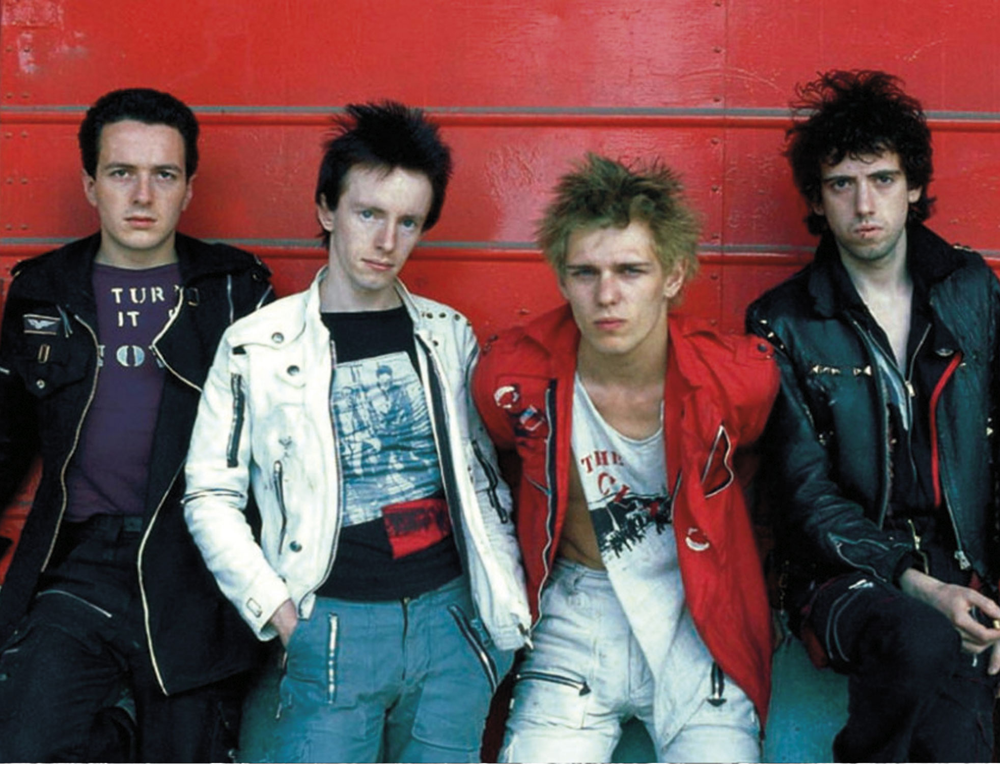
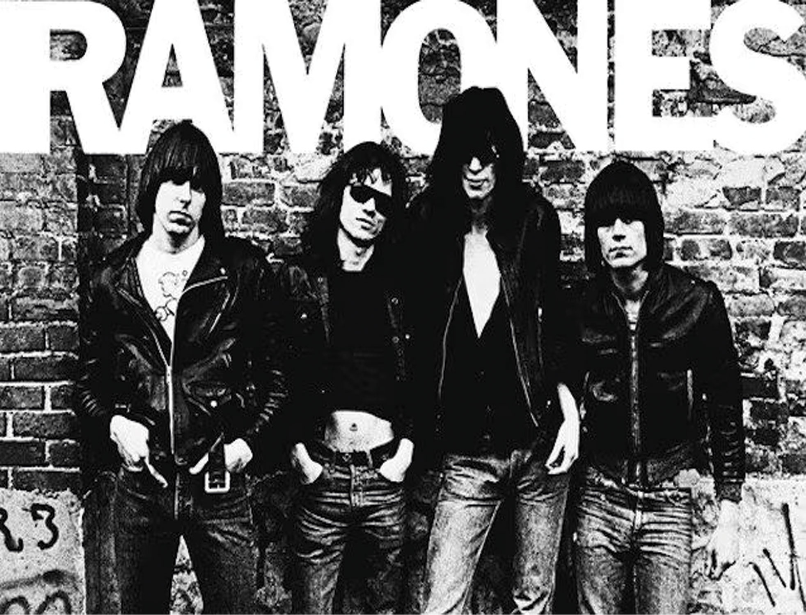

Punk is a musical current that shook the international scene with its raw energy and minimalist approach. Born in underground clubs, it transformed anger and social discomfort into direct, no-nonsense music. Rapid tracks, aggressive riffs and provocative lyrics made punk a weapon of protest, capable of creating community and inspiring entire generations to never conform.
Top 5 punk bands of all time
Sex Pistols
The Sex Pistols were not just a band: they were a punch in the stomach to the system. With just a few songs they wreaked havoc, shouting anger and rebellion to anyone who would listen.
The Clash

With the Clash, punk found brains as well as brawn. Dirty but powerful melodies, contaminated rhythms and words that made you think: they were the revolution with a guitar in their hands.
Ramones

The Ramones took rock, sped it up and cut it to the bone. Short songs, three chords and lots of energy: their punk was pure, direct and unadulterated.
NOFX
With NOFX, punk took an irreverent and unregulated turn. Politics, black humour and a lot of energy: their music was a middle finger to the system and also to themselves.
Green Day
With Green Day, punk became generational. Since the 1990s they have given voice to those who felt out of place, mixing speed, anger and refrains that never left you.
Black Flag
Black Flag were pure rage. Fast, hard and uncompromising, they turned American punk into a scream against everything: society, authority and even themselves.